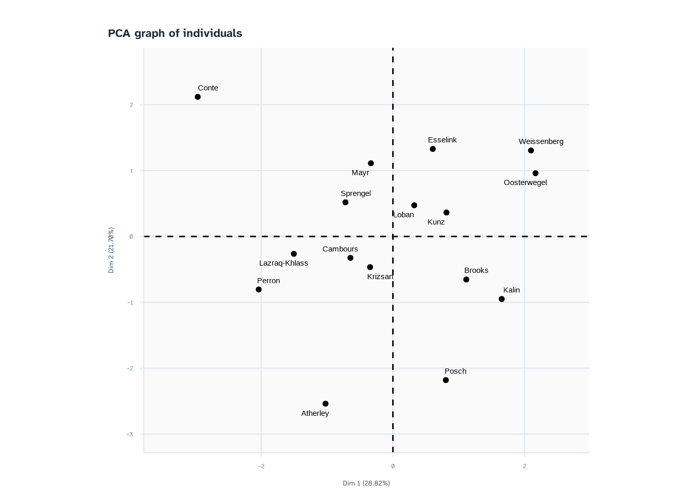
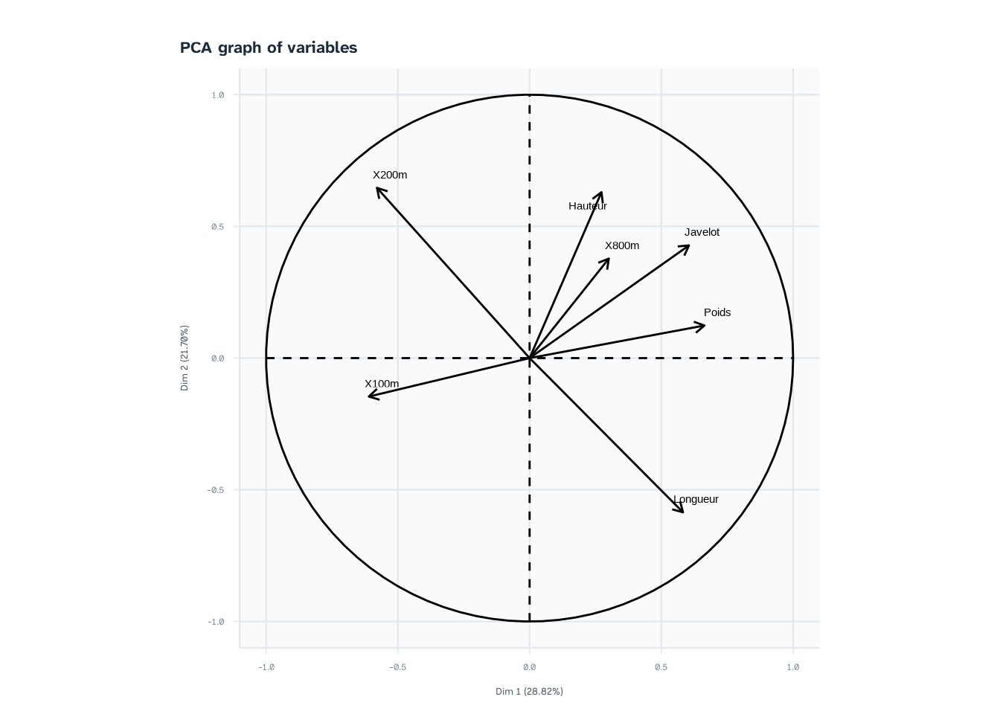
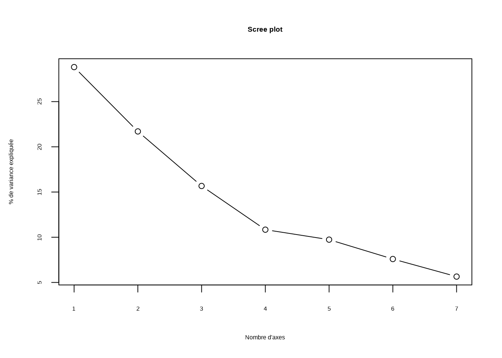
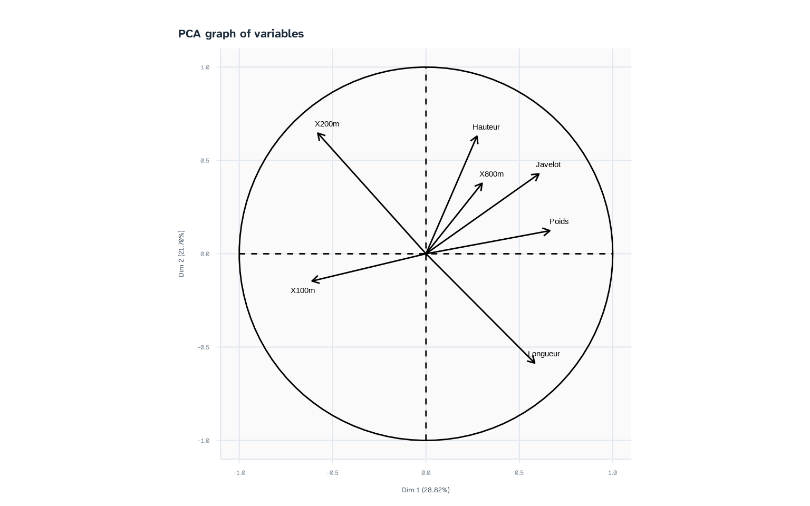
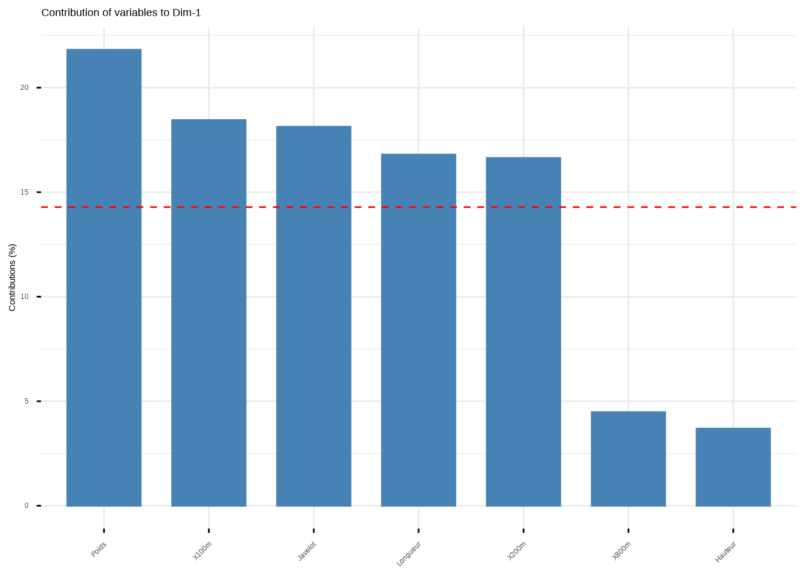
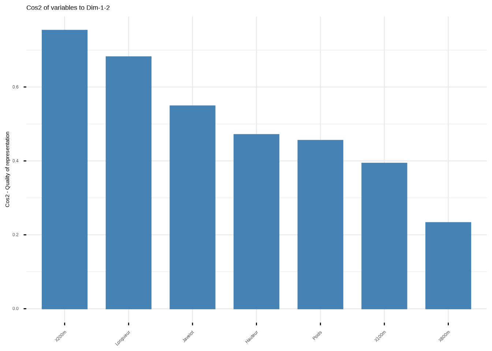
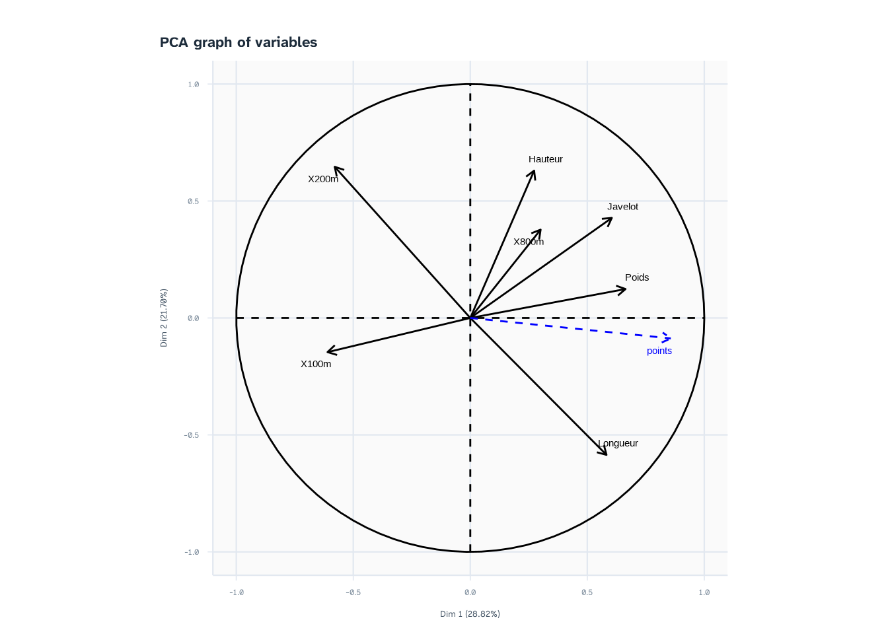
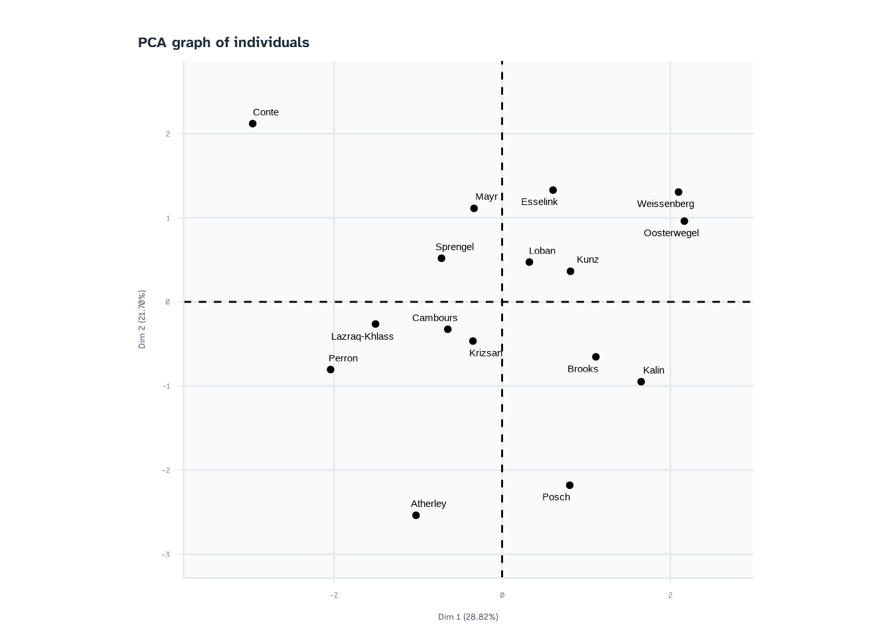
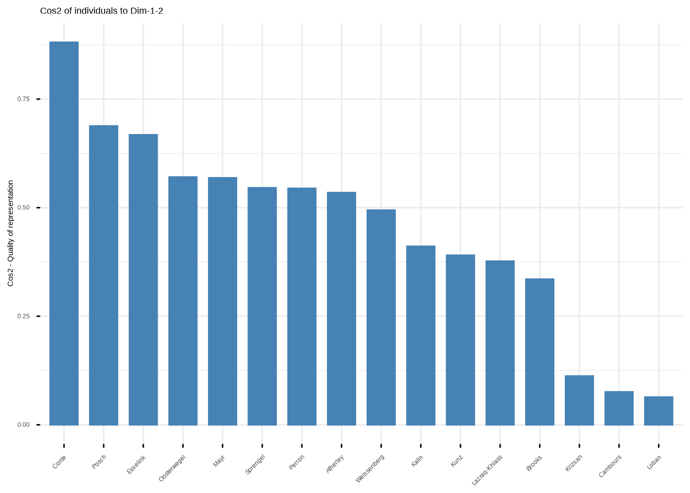

Chapitre 7 Analyse en Composantes Principales
L’objectif de ce chapitre est de comprendre l’Analyse en Composantes Principales (ACP), un outil incontournable pour explorer des données multivariées.
7.1 Généralités
L’objectif d’une ACP est de décrire, sans a priori, un tableau de données constitué exclusivement de variables quantitatives = simplifier un jeu de données pour en extraire de l’information.
L’ACP permet de déterminer les espaces latents (de dimension inférieure) sur lesquels la projection du nuage de points initial est la moins déformée possible. Autrement dit, elle cherche l’espace qui conserve le plus d’information, c’est-à-dire de variabilité (ou inertie).
Le principe est de trouver un premier axe (la première composante principale), issu d’une combinaison linéaire des variables initiales, tel que la variance du nuage projette sur cet axe soit maximale. Le processus est ensuite réitéré dans des directions orthogonales pour déterminer les composantes suivantes.
7.1.1 Packages R : FactoMineR
Pour réaliser une analyse en composantes principales, nous utiliserons le package FactoMineR, développé par François Husson et Julie Josse. Ils proposent une série de vidéos en français très ditactique pour comprendre l’ACP :
Youtube - François Husson
7.1.2 Normalisation des individus : pré-requis
La première étape pour étudier les variables et les individus est de centrer et reduire les données.
Cela revient à utiliser cette formule :
\[ X^*_{ij} = \frac{X_{ij}-\hat{\mu}_j}{\hat{\sigma}_j} \]
où \(\hat{\mu}_j\) est la moyenne et \(\hat{\sigma}_j\) est l’écart-type de la variable \(j\).
La normalisation permet de centrer les variables en 0 et de reduire leur écart-type à 1.
Remarque : La normalisation est indispensable pour comparer des variables exprimées dans des unités de mesures différentes (ex. mètres, secondes, kg).
7.2 Réaliser la PCA sur R.
Nous réaliserons la PCA sur le jeu de données hepthatlon.csv. Cette exemple propose aussi des lignes de codes pour bien conditionner les données à l’Analyse en Composantes Principales.
- Importer les données.
df <- read.table("data/heptathlon_2023.csv", sep=",", header=T, stringsAsFactors = T, row.names = 1)Les PC (Composantes Principales) résument l’information de la matrice \(X_{ij}\) individus/variables.
- Regarder le tableau. Que remarque t’on ? Supprimer les deux athlètes qui n’ont pas fini l’hepthatlon.
na_athlete = which(is.na(df$Points)) # On sélectionne les athlètes ne possèdant pas de points.
df = df[-na_athlete,] # On supprime les athlètes respectant la condition évoquée sur la dernière ligne.- La PCA se réalise uniquement sur des variables quantitatives caractérisant les individus/observations.
Ici, sélectionner uniquement les variables de performances (On laisse de côté les variables Pays et Points. Pays est une variable qualitative et Points est une variable quantitative construite par rapport à l’ensemble des variables de performance).
- La variable 800m n’est pas une variable quantitative. Il faut d’abord transformer les minutes en secondes et additionner les secondes pour avoir une variable en seconde.
## [1] "La première valeur de la variable 800m est conditionnée comme suit : 2m13s62"df$X800m = as.numeric(paste0(as.numeric(substr(df$X800m, 1, 1))*60+as.numeric(substr(df$X800m, 3, 4)),".",substr(df$X800m, 6, 7))) # On transforme les données de 800m.
print(paste("Après notre transformation, la première valeur de la variable 800m est conditionnée comme suit :", df$X800m[1]))## [1] "Après notre transformation, la première valeur de la variable 800m est conditionnée comme suit : 133.62"- Effectuer la normalisation via la fonction
scale(). Expliquer le tableau normalisé. Vous pouvez utilisercolMeanspour avoir la moyenne de l’ensemble des variables.
df_quanti = data.frame(scale(df[,var.perf])) # On scale dans un data.frame les variables sélectionnées.
colMeans(df_quanti) # Vérification : les moyennes sont proches de 0## X100m Hauteur Poids X200m Longueur
## 4.093947e-16 3.148523e-16 -6.164774e-16 1.147953e-15 4.059253e-16
## Javelot X800m
## 5.429684e-16 1.848483e-15- Importer la librarie
FactoMineRet réaliser la PCA à l’aide de la fonctionPCA.


7.3 Interprétation de l’ACP
Une PCA permet de visualiser l’inertie du nuage de points en fonction des liaisons entre les variables caractérisant les individus. Les variables fortement liées vont orienter les individus selon un même axe.
Autrement dit, la PCA permet d’explorer l’hétérogénéité du jeu de données et de réduire les variables en facteurs (Dimensions ou Composantes Principales ou Principal Component).
7.3.1 Choix du nombre d’axes
Avant d’analyser les graphiques, il faut déterminer combien de composantes principales conserver pour avoir une visio global de l’information contenue dans le jeu données.
## eigenvalue percentage of variance cumulative percentage of variance
## comp 1 2.0171883 28.816976 28.81698
## comp 2 1.5191683 21.702404 50.51938
## comp 3 1.0968695 15.669564 66.18894
## comp 4 0.7585941 10.837059 77.02600
## comp 5 0.6814221 9.734601 86.76060
## comp 6 0.5313766 7.591095 94.35170
## comp 7 0.3953810 5.648301 100.00000Chaque valeur propre représente la quantité d’information (variance) capturée par un axe. Deux méthodes permettent de choisir le nombre d’axes :
Seuil de variance cumulée : Conserver les axes jusqu’à atteindre un pourcentage d’inertie cible (ex. 60 % ou 70 %).
Règle du coude (Scree plot) : Observer le graphique des valeurs propres et repérer le point d’inflexion.
plot(res.pca$eig[, 2], type = "b", xlab = "Nombre d'axes", ylab = "% de variance expliquée", main = "Scree plot")
On remarque ici que les 2 premières composantes expliquent un fort pourcentage de l’inertie du jeu de données, néanmoins on pourrait s’intéresser aussi aux axes 3 et 4 qui possèdent aussi de fortes valeurs d’explication de la variance. Pour rappel, inertie = variance = information.
7.3.2 Cercle des corrélations (graphique des variables)
Le cercle des corrélations permet d’étudier les liaisons entre variables et d’interpréter le sens des axes. Vous avez déjà vu dans le cours une statistique qui permet de lier deux variables quantitatives entre elles : le coefficient de corrélation.

La première chose que vous pouvez déduire des variables, ce sont leurs liens.
Deux flèches opposées signifient que la correlation est proche de -1.
Deux flèches qui vont dans la même direction signifie que les variables ont un coefficient de correlation proche de 1.
Dans les deux cas, nous pouvons dire que le lien est fort. La PCA résume alors l’information de ces groupes de variables en un seul axe.
- Lorsque deux variables possèdent un angle à 90° avec une autre variable alors leur lien (coef. de correlation) est proche de 0.
Combien de groupes de variables observons-nous ?
Expliquer le lien entre les variables 200m et Longueur. Les deux variables sont t’elle résumées selon un seul axe ?
Expliquer le lien entre les variables 100mH et Poids. Les deux variables sont t’elle résumées selon un seul axe ?
Que pouvons-nous dire sur les groupes de variables ? Le groupement selon les axes peut-il s’expliquer d’un point de vue biomécanique et physiologique ?
7.3.3 Qualité de représentation (\(Cos^2\)) et contribution des variables
Pour éviter les fausses interprétations sur le cercle des corrélations, il faut vérifier :
La qualité de représentation (\(Cos^2\)) : mesure à quel point une variable ou un individu est bien représenté(e) sur un axe donné. Plus le \(Cos^2\) est proche de 1, plus la projection est fidèle.
La contribution (CTR) : mesure l’impact (en %) d’une variable ou d’un individu dans la construction d’un axe. La somme des contributions des variables pour un axe donné vaut 100 %.
## Dim.1 Dim.2 Dim.3 Dim.4 Dim.5 Dim.6
## X100m 0.37219493 0.02132765 0.23841817 0.0793199804 0.17879502 0.094131898
## Hauteur 0.07443999 0.39667069 0.07195269 0.3025239467 0.14173199 0.003821285
## Poids 0.44003235 0.01529352 0.12953216 0.2256718856 0.04259036 0.120159261
## X200m 0.33559829 0.41764765 0.01977245 0.0008177394 0.02551409 0.008217478
## Longueur 0.33889090 0.34263711 0.02651009 0.0647399154 0.01073956 0.102493391
## Javelot 0.36572562 0.18297578 0.09671806 0.0264979789 0.15797299 0.134290862
## X800m 0.09030624 0.14261587 0.51396587 0.0590226753 0.12407809 0.068262466
## Dim.7
## X100m 0.015812344
## Hauteur 0.008859403
## Poids 0.026720461
## X200m 0.192432312
## Longueur 0.113989037
## Javelot 0.035818699
## X800m 0.001748791## Dim.1 Dim.2 Dim.3 Dim.4 Dim.5 Dim.6
## X100m 18.451174 1.403903 21.736239 10.4561818 26.238512 17.7147226
## Hauteur 3.690285 26.111044 6.559823 39.8795533 20.799441 0.7191292
## Poids 21.814143 1.006703 11.809259 29.7486995 6.250217 22.6128234
## X200m 16.636934 27.491862 1.802625 0.1077967 3.744241 1.5464507
## Longueur 16.800162 22.554256 2.416887 8.5341968 1.576051 19.2882756
## Javelot 18.130465 12.044471 8.817645 3.4930377 23.182840 25.2722555
## X800m 4.476837 9.387760 46.857523 7.7805342 18.208698 12.8463430
## Dim.7
## X100m 3.9992671
## Hauteur 2.2407254
## Poids 6.7581543
## X200m 48.6700899
## Longueur 28.8301723
## Javelot 9.0592859
## X800m 0.4423053# --- Visualisation synthétique avec factoextra (optionnel mais très lisible) ---
library(factoextra)
# Graphique des contributions des variables sur l'axe 1
fviz_contrib(res.pca, choice = "var", axes = 1)

Règle d’interprétation :
Une variable avec un \(Cos^2\) faible sur un plan factoriel se situe près du centre du cercle : elle ne doit pas être interprétée sur ces axes (son information est portée par d’autres axes).
Une variable avec une forte contribution sur un axe est un descripteur majeur de cet axe.
7.3.4 Interprétation des axes
Il faut interpréter les axes en fonction du cercle des corrélations.
Vous pouvez aussi interpréter les axes en ajoutant des variables qualitatives ou quantitatives supplémentaires directement sur la fonction de la PCA.
Ces variables supplémentaires ne rentrent pas dans la construction des axes (CP), c’est-à-dire qu’elles sont projetées selon les variables qui construisent les CPs. Elles sont représentées en bleus dans le cercle des corrélations.
points = df$Points # On attribut les points des athlètes dans une nouvelle variable.
df_quanti$points = points # On créé une nouvelle colonne à laquelle on attribut la variable points.
res.pca = PCA(df_quanti, quanti.sup = 8, graph = F) # La variable supplémentaire est la variable Points qui se situe à la 8ième colonne du tableau.
plot(res.pca, choix = "var")
- Que peut-on dire de l’Axe 1 (composante principale 1 ou Dimension 1) ?
7.3.5 Graphique des individus
Le graphique des individus projette les observations dans le nouveau espace latent.

- Que dire des trois heptathlètes Conte, Posch et Kalin ?
Exemple d’interprétation : Conte possède des coordonnées positives sur l’axe 2 et négatives sur l’axe 1. Elle s’oppose à Posch et Kalin, qui présentent des profils similaires entre elles.
Pour les individus, nous pouvons également vérifier leur qualité de représentation (\(Cos^2\)) et leur contribution (CTR) :
# Visualisation des individus les plus contributifs sur l'axe 1
fviz_cos2(res.pca, choice = "ind", axes = 1:2)
7.4 Travaux dirigés
Durée : 3h
7.4.1 Présentation du projet & des données
Ce projet repose sur un jeu de données multi-omiques issu d’une étude pré-clinique menée sur 120 souris réparties en 4 groupes expérimentaux :
CTL (Contrôle) : régime standard.
HFHC (High Fat, High Carbohydrates): régime riche en graisses et glucides (stress métabolique).
IRON : surcharge en fer induite par fer-dextran.
IRON + HFHC
Des analyses biochimiques à partir d’échantillons sériques ont été réalisées : 8 métabolites ont été quantifitées.
L’objectif initial de ce projet était d’évaluer et prédire l’accumulation de lipides hépatiques (variable réponse, \(Y\)) à partir des variables biochimiques (variables explicatives, \(X\)).
Les données sont stockées et téléchargeables ICI. Utiliser la fonction load.
1) Regarder le jeu de données et décrire les variables ?
a. Quelle est la dimension de la matrice ?
b. Les variables sont t’elles toutes bien conditionnées ? Supprimer les NAs.
c. Interpréter le tableau concernant les groupes expérimentaux
d. Décrire la nature des variables. Utiliser la fonction class()
e. A partir de quelles données construire la PCA ?
2) Quels sont les étapes à réaliser pour analyser les résultats d’une analyse en Composantes Principales ?
3) Combien d’axes devons-nous interpréter ?
4) Interpréter les axes.
a. A partir des variables ? Quelles sont les groupes de variables ?
b. Pourrait-on projetter des variables supplémentaires ? Lesquelles ?
5) Interpréter le graphique des individus en fonction des axes.
a. Construire le graphique en fonction des groupes.
b. Interpretez.
c. Est-ce que les coordonnées des individus sont différents statistiquement ?
d. Quelle visualisation graphique pourriez vous réaliser ?
e. Quel test statistique pourriez-vous faire ?
d. Ouverture : comment quantifier la généralisation du modèle ?
6) Travail maison : Refaire le TD en interprétant l’axe 3 et 4 de la PCA.
7.5 Travaux pratiques
Durée : 3h
Ce TP vise à initier aux différentes phases de l’analyse en composantes principales : préparation des données, mise en oeuvre de l’ACP, réalisation des graphiques, interprétation.
7.5.1 Préparation des données (obligatoire)
Implémenter le jeu de données Morpho2.xlsx sur R que vous pouvez télécharger ICI. Utiliser la library
readxlet sa fonctionread_excel().Utiliser la fonction
head()pour voir les premières lignes de la table. Quelles sont les variables de la table de données? Combien d’observations/individus ont été inclus ?La table contient des données manquantes. On peut le vérifier à l’aide de la commande
is.na(). Quelles variables présentent des données manquantes ?A quoi correspond la colonne 1 ?
7.5.2 Analyse en composantes principales (obligatoire)
Créer un tableau nommé
Xqui contient uniquement les données morphologiques.Centrer et réduire ce tableau à l’aide de la fonction
scale(). Vérifier la moyenne et l’écart-type de vos variables.Réaliser l’analyse en composantes principales avec l’aide de la fonction
PCA()de la librairieFactoMineR.
7.5.3 Interprétation des axes (obligatoire)
Tracer un diagramme en barres pour montrer la décroissance des valeurs propres. Combien d’inertie est expliquée par les 2 premiers axes ? Combien d’axes doit-on conserver pour expliquer au moins 70% d’inertie ? Combien d’axes proposez-vous de conserver pour la suite de l’analyse ? Pourquoi ?
Tracer, pour les axes factoriels conservés, la contribution des variables. Quelles variables expliquent le mieux le premier axe factoriel ? Le second ?
Réaliser l’analyse en composantes principales avec l’aide de la fonction
PCA(), en ajoutant la variable qualitative sexe en variable supplémentaire, et la variable quantitative IMC en variable supplémentaire.
7.5.4 Interprétation des individus (obligatoire)
- D’après l’interprétation des axes, que dire des individus avec des coordonnées positives sur l’axe 1 et négative sur l’axe 2 ?
7.5.5 Validité de l’interprétation (bonus, version expert)
- Maintenant la question est de savoir si notre modélisation est robuste. Soit nous souhaitons répondre à la question : dans quel mesure peut-on avoir confiance en nos résultats ? Que souhaiterions-nous pour avoir une preuve concernant la véracité de nos conclusions ? Comment construire le test statistique répondant à cette question ?